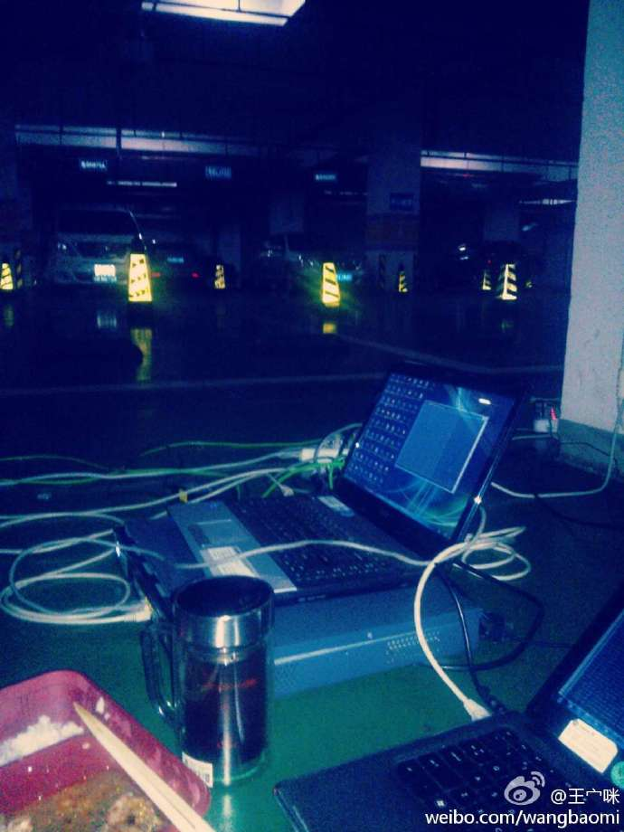

翻出来刚毕业那会儿工作时被派到地下车库干活儿的照片，当时是在做无线 AP 的测试，由于写字楼无线网络干扰严重，公司又没有专业的隔离实验室，就只好在地下车库这种干扰少一些的地方做无线测试了。当时觉得把自己派到地下真是憋屈，还安慰自己说在车库里工作过的后来都牛逼了…
正式开工
受2019冠状病毒疫情影响，这周一才正式复工，之前两周其实是在家里远程办公，效率一般，复工后的效率要高一些。
听说杭州很多企业受疫情影响都过得不太好，裁员、降薪之类的公司有不少，我们也降薪了，全员降10%，可自愿多降一些，但公司不白降你薪，会给你换双倍价值的期权。期权这东西，我认为信则有，不信则无。有意思的现象是：由于不能聚集到一起开会，老板在钉钉上视频直播讲这次降薪的决定，底下的人在群里纷纷表示自己愿意自降20%、自降30%等等，像极了斗鱼上美女主播唱歌表演时粉丝们刷弹幕刷礼物的样子，只不过这个主播不说谢谢。
关于软件测试
国内技术型的创业公司，不建议设专职的软件测试岗位。
这是我这两年的感受，技术型的创业公司要求先活下来再活得好，专职的软件测试岗位在创业公司比较尴尬：干的外包的活儿，拿着正式员工的钱。自己觉着不爽，公司也觉着不划算。
关于裁员
今天听说一个公司元老级的人物合同到期了，这个时间点正是公司困难的时候，就没有再跟他续签合同了，这个应该不算是被裁掉，只是觉得有些心寒。在我的印象里，他原先是个交互设计师，后面由于公司发展需要还兼任了产品经理，加班出差之类的事情也没见抱怨过，属于任劳任怨而且有一定的能力能产出成绩，对公司特别忠诚的那种人（老板经常讲对公司要忠诚）。
不续签合同，我想他也很无奈吧，这个时间点除了几个大厂在招人，其他公司基本都只出不进了，他能顺利进入大厂么？或许他当初就是被老板画的大饼吸引了才从大厂出来加入这个创业公司的吧。
如何在公司里不被裁，我有几个感受：
一定要跟对一个好老板
这里的「老板」不是指 CEO，而是你的某个上司，这个上司必须得在公司有一定的地位，一但有人要裁你，他有能力保住你；
做跟公司方向一致的事情
公司的最终目标都是赚钱，要么帮公司赚钱，要么帮公司省钱。每个月的个人收入如果是10000元，那公司在你身上的支出可能是15000~20000，你一年能帮公司赚到 (15000~20000)*12这么多钱吗？公司都是按钱算账的；
高调做事
工作上做出来的成果，要高调宣扬，给自己打广告，告诉老板们你又帮公司实现了什么。一年只需有那么两三次高调的事情让老板们听到，并且没有非常大的黑点，你在老板心里的地位基本上就稳了；
保持好心态
工作，其实是个人与企业做的一次长达 N 年的交易，这 N 年期间，企业为个人提供薪资，个人为企业提供产品（代码、服务等等）。个人随时可能出现不合规范的交易（比如交不出好的产品，或者突然提离职），企业也随时可能出现不合规范的交易（比如单方面解除合同，延期发工资等），双方都有能力对对方造成损失。企业为此做了充足的准备，比如一些关键岗位必须设置 backup，防止关键人物突然离职造成的业务停滞，将意外造成的损失最小化；而个人往往没有对此做足够的准备，一方面可能被企业宣导的「大家庭」理念误导了。所以，认清「人与企业之间是单纯的利益关系，而不是亲戚朋友的关系」这个事实，保持好心态，与企业公平交易即可。